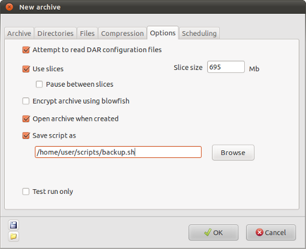

| Prev | Home | Next |
The "Options" tab of the "New archive" window provides a number of extra options, including division of an archive into "slices", encryption and script creation.

Read DAR configuration files - if this option is selected Dar will read the configuration files $HOME/.darrc and /etc/darrc if they are present. Instructions in the configuration files will be parsed after reading the DarGUI settings. For more information about configuration files see the DAR manual page.
Use slices - Dar can split an archive up into a
number of files or "slices" of a specified maximum size, making it
possible, for example, to store several Gb of data on an appropriate
number of CDs. Slice filenames are composed of the archive base name
followed by a dot, a number, a dot and the extension (dar).
You can tell Dar to pause between slices to allow
another activity to be carried out, for example, copying the slice to
CD-ROM.
Note: to read the contents of an archive which is composed of more than
one slice DarGUI needs to be able to access both the first and last
slices, in the same location. This makes it impossible to read the
contents of an archive which has been stored, for example, on a number
of CD-ROM unless the Slice size on the Options tab
is set to slightly less than
half of the size of the storage medium - eg 320Mb for a 650Mb CD-ROM.
Two slices can then be saved on each disk, ensuring that the first and
final slices are saved on the same disk.
Encrypt archive using blowfish - Dar archives can be encrypted using the Blowfish cypher. An encrypted archive can only be read if the same pass phrase is given as that used to encrypt it.
Open archive when created - After creating an archive, DarGUI will attempt to open it if this option is selected.
Save script as - Select this option to produce a backup script using the current settings. You must also give a suitable filename in a location where you have write permissions.
Test run only - When this option is selected Dar will produce messages as if an archive is being created, but no archive will be written.
| Prev | Home | Next |
| Compression | Up | Scheduling |